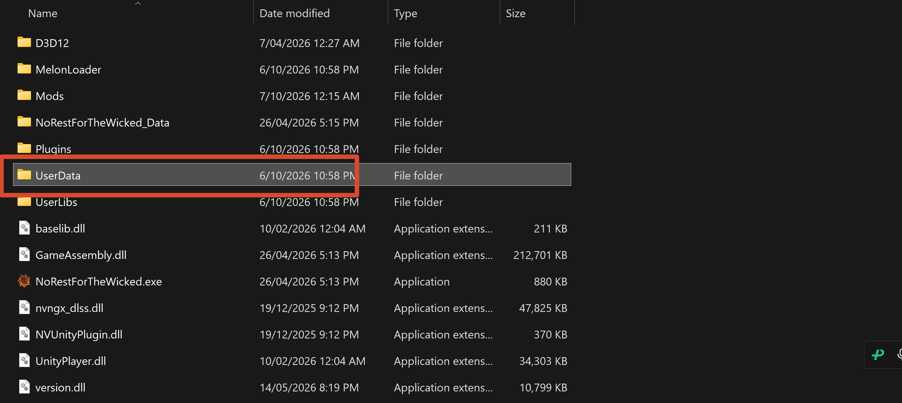
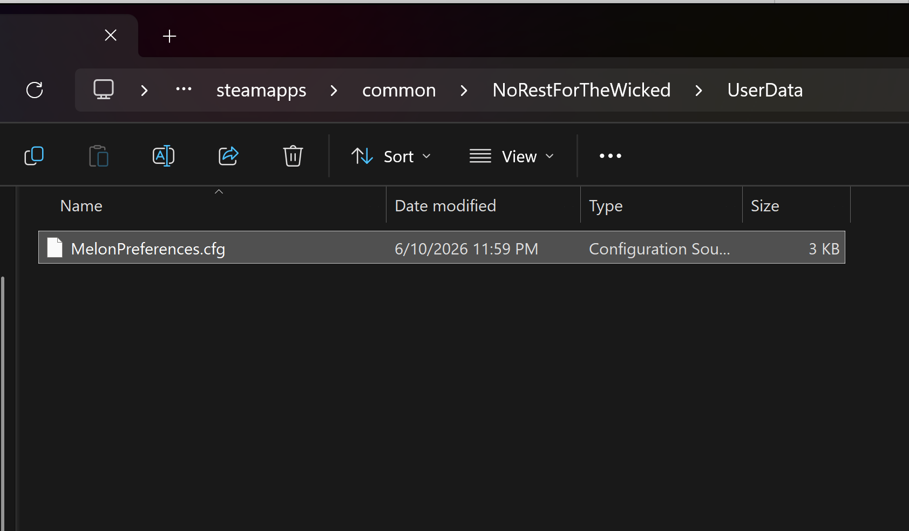

1Preparation
- Download Melonloader
- Download CrucibleUnlock.dll
- Download MelonPreferences.cfg
2Install Melonloader
Select the game 《No Rest for the Wicked》

Click Install

Installation complete

3Place CrucibleUnlock.dll
Open the 📂 Mods folder

Place CrucibleUnlock.dll

4Place MelonPreferences.cfg
Open 📂 UserData

Place MelonPreferences.cfg

⚠️ If you have installed other mods before,
UserData may already contain a MelonPreferences.cfg — do not overwrite it. See “Already have a MelonPreferences.cfg?” at the end of this page.
5Launch the game
The first launch may be slow; later launches are fast

Enjoy BOSS RUSH!

Already have a MelonPreferences.cfg?
UserData\MelonPreferences.cfg is one shared file that MelonLoader uses for every mod. If you have installed any other mod before, or the game has already been launched once, that file already exists. Dropping the downloaded cfg on top of it deletes the settings of your other mods as well.
What to do
- Copy your current
UserData\MelonPreferences.cfgsomewhere else as a backup. - Open it in Notepad.
- Append the whole block below to the end of the file. If a
[CrucibleUnlock]section already exists, edit the values inside it instead — do not create a second[CrucibleUnlock]section.
[CrucibleUnlock]
mode = "runtime-unlock"
guard_broken_warrick_music = true
repair_warrick_phase2_target = true
repair_bossrush_progression = true
repair_ritual_animator = true
trace_boss_motion = false
boss_trace_drop_amount = 300- Save, close, and start the game again.
Find your case
| Your situation | What to do |
|---|---|
No mods installed before, no cfg in UserData | Drop the downloaded MelonPreferences.cfg into UserData\ |
The cfg exists but has no [CrucibleUnlock] | Append the block above to the end of the file |
The cfg already has [CrucibleUnlock] | Change the values in that section only; keep the other mods' sections |
| You messed it up and want a clean start | Back it up, then delete the cfg; MelonLoader writes a fresh default file on the next launch (other mods' settings return to their defaults) |
The game must be fully closed while you place the DLL or edit the cfg. Also turn on Windows File name extensions and make sure the file is named
MelonPreferences.cfg, not MelonPreferences.cfg.txt.